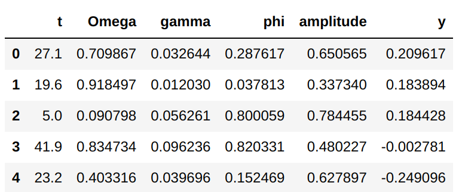
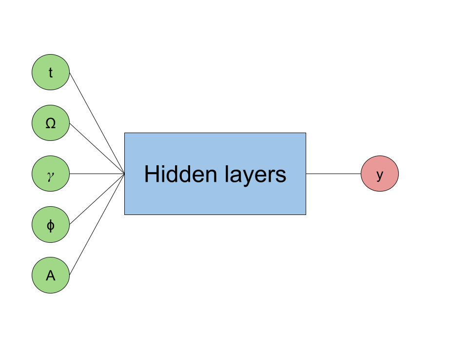
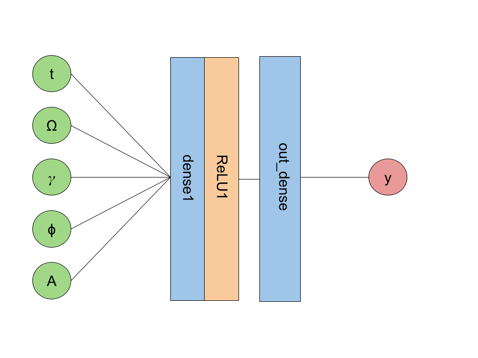
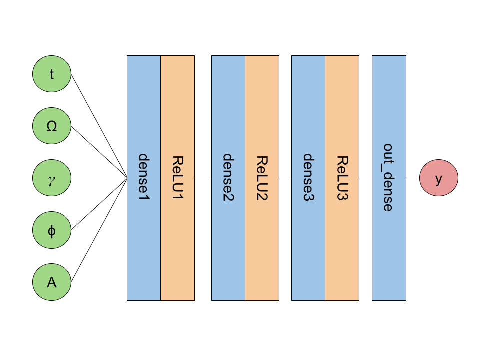
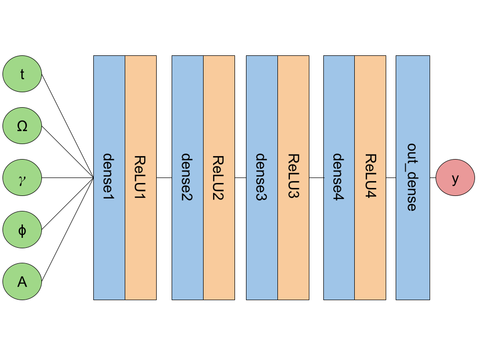
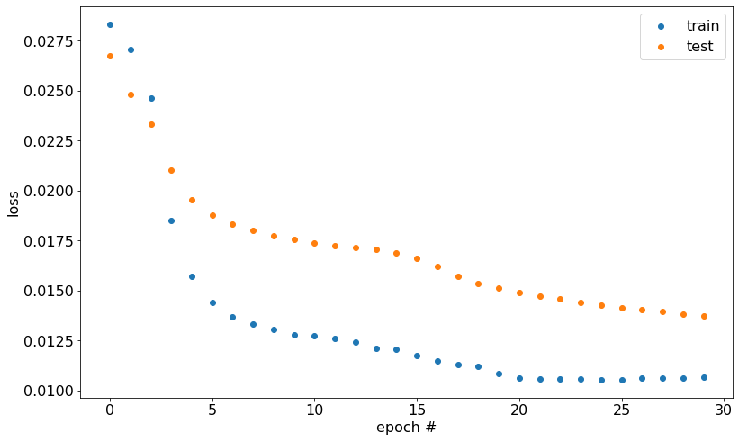
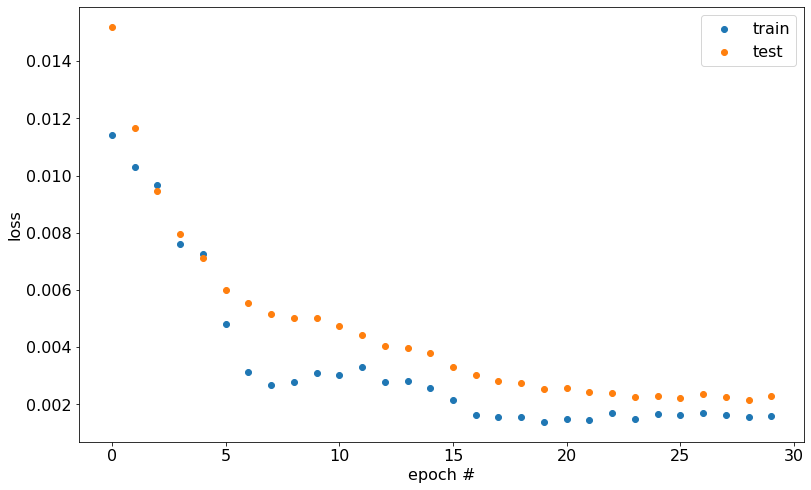
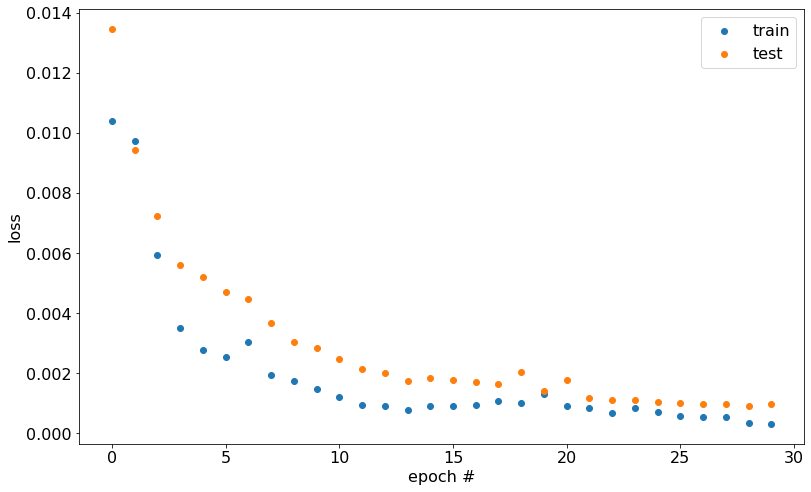
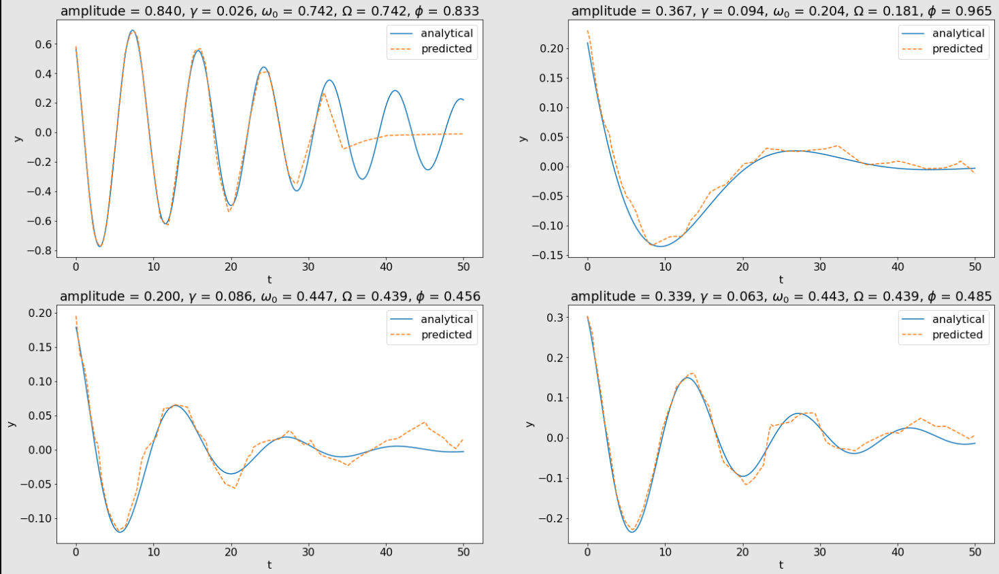

Universal Function Approximation
Fitting a neural network to predict the position of a harmonic oscillator
3/22/2023
The main code for this project can be found here.
The damped harmonic oscillator
Simple harmonic motion occurs when a system displaced from its equilibrium position experiences a restoring force in the direction of its displacement. When there is only one force applied to the system, it oscillates about its equilibrium position.
Simple harmonic motion is shown by a block attached to a spring in one dimension (along $y$ axis). Say we have a block of mass $m$ attached to a spring with a spring constant $k$. Hooke's law says: $$\begin{eqnarray} F_{spring} &=& -ky \\ \end{eqnarray}$$ where $y$ is the amount that the block is displaced from equilibrium.
A more realistic harmonic oscillator system includes a damping force. This damping force is dependent upon the velocity of the mass. It can be written as: $$\begin{eqnarray} F_{damping} &=& -c \frac{dy}{dt} \end{eqnarray}$$ where $c$ is the damping coefficient defined as: $$\begin{eqnarray} c = 2 \gamma m \end{eqnarray}$$ and $\gamma$ is a parameter that defines the damping ratio of the oscillator.
Now, the net force on the mass is: $$\begin{eqnarray} F &=& F_{spring} + F_{damping} \\ &=& -ky - 2 \gamma m \frac{dy}{dt} \end{eqnarray}$$
Newton's second law gives: $$\begin{eqnarray} F &=& ma \\ &=& m \frac{d^2y}{dt^2} \end{eqnarray}$$ Equating the two equations above and moving all terms to one side gives the equation of motion (EOM): $$\begin{eqnarray} ky + 2 \gamma m \frac{dy}{dt} + m \frac{d^2y}{dt^2} = 0 \end{eqnarray}$$ We now have an ordinary differential equation (ODE) that can be solved for $y$. To solve this ODE, it's easier to write the equation of motion in terms of the oscillator's natural frequency (frequency of system without damping), $\omega_0$. $$\begin{eqnarray} \omega_0 = \sqrt{\frac{k}{m}} \end{eqnarray}$$ Now, we can write $k$ in terms of $\omega_0$ and factor out the $m$ from each term to get the equation of motion: $$\begin{eqnarray} \omega_0^2 y + 2 \gamma \frac{dy}{dt} + \frac{d^2y}{dt^2} = 0 \end{eqnarray}$$ Solving this ODE is a bit complicated and not entirely relevant to this rest of this writeup. When $\gamma$ < $\omega_0$, the solution to the ODE is called underdamped. The real part of the solution can be written as: $$\begin{eqnarray} y(t) = Ae^{-\gamma t} cos(\Omega t + \phi) \end{eqnarray}$$ where $A=$ amplitude, $\Omega = \sqrt{\omega_0^2 - \gamma^2}$, and $\phi=$ phase shift at $t=0$.With this analyitcal solution, we can define the parameters of an underdamped harmonic oscillator and evaluate its position at any time, $t$. This specific solution is the focus of this project.
Neural networks and the universal approximation theorem
A neural network is a type of statistical model that learns to make predictions based on previously seen data. It consists of internal weights and biases that are updated through a training process with the goal of minimizing a loss function.
The internal mathematical functions of a neural network can vary and are selected based on the type of prediction task undertaken. For this project, a simple fully-connected, feedforward neural network was implemented. More on the specific architecture is discussed later.
Simply put, once a neural network model is trained, you have a function that takes some input and produces some output. Letting $N$ be the neural network function, $\textbf{x}$ be the input (usually a vector), and $\hat{y}$ be the network's predicted value, we can formally write the mathematical representation of the trained neural network as:
$$\begin{eqnarray} \hat{y} = N(\textbf{x}) \end{eqnarray}$$An interesting property of neural networks is the universal approximation theorem. In the book Deep Learning by Goodfellow, et al., this theorem is defined (pg. 198):
... a feedforward network with a linear output layer and at least one hidden layer with any 'squashing' activation function (such as the logistic sigmoid activation function) can approximate any Borel measurable function from one finite-dimensional space to another with any desired non-zero amount of error, provided that the network is given enough hidden units.
In simpler terms, a neural network can be used to approximate a function given the network is big enough.
The purpose of this project was to test the universal approximation theorem by training a neural network to approximate the solution of the underdamped harmonic oscillator. Specifically, the neural network was trained to predict the position of the oscillator given its parameters and the time. As discussed more later, there isn't much practical use for what I've done here, it's just a fun exercise.
The training data
The position of the oscillator is dependent upon $A$, $\gamma$, $\omega_0$, $\phi$, and $t$. To generate training data for the neural network to learn from, a random set of these parameters was generated and the analytical solution was used to calculate the position of the oscillator. One randomly generated set counted as one training sample (i.e. one input vector mapping to one scalar output). 1e6 samples were generated for the training dataset. An example of the generated data is shown below.
Again, each row represents the parameters of an oscillator at a given time. The columns labeled t, Omega, gamma, phi, and amplitude contain the values of the input vector to the neural network, and column y contains the analytical position value that the network learns to predict.
Constraints had to be applied to each parameter of the oscillator. This was necessary to generate a space of parameter values that the neural network could reasonably learn from. Applying these constraints limits the network's abilities to generalize to parameters of values that lie outside of the ranges in the generated dataset. The constraints for each parameter were decided somewhat arbitrarily and were set as follows:
$t$:
- [0, 50] in 0.1 increments
- (0.1, 1]
- [0.01, 0.1]
- To simplify the code, I decided to generate values of $\omega_0$ and $\gamma$ such that all generated $\gamma$ values would be less than the smallest $\omega_0$ value (this is the underdamped condition).
- [0, 1]
- [0, 1]
With these constraints in place, the training dataset was generated.
Network architecture and training scheme
At a high level, the neural network looks like:
The "Hidden layers" portion of the neural network consists of fully-connected dense layers with ReLU activation functions. The network uses the MSE loss function to calculate the error in its predictions and uses the Adam optimizer to update its weights and biases.
Along with the train dataset, a test dataset was also generated using the same methods to generate the training data. The test dataset was not used in any part of finding the network's optimal weights and biases. It was only used to test how the model generalizes to unseen data.
The neural networks were trained across 30 epochs with a batch size of 64. This means that in each training epoch, the training data was looped over 64 samples at a time. The model at that state in training was used to predict the y value of all 64 samples, and then the MSE loss was computed for those samples. A backward pass was then completed to update the weights and biases of the network. The overall loss was computed at the end of each epoch for the train and test datasets.
After the training process completed, a random set of harmonic oscillator parameters were generated and the value of y was computed across the time interval [0, 50] in 0.1 increments. The fitted model was then used to predict the value of y across this time interval and the results of each function were compared.
Results of increasingly complex network architectures
To test the universal approximation theorem, the architecture of the neural network was increasingly given more hidden layers and the trained model's results were compared to the analytical solution.
I created 3 different network architectures. The first, simplest network consisted of a dense layer, a ReLU activation function layer, and a final dense layer (referred to as nn_simple later). Visually, this looks like:
The next version includes two more dense + ReLU layers (referred to as nn_medium).
The final version includes an additional dense + ReLU layer (referred to as nn_final).
For the specific dimensions of each layer and other details about the networks, see the Jupyter notebook containing the code for this project.
The loss for nn_simple across the training epochs:
The loss for nn_medium:
The loss for nn_final:
As expected, the most complex network attains the lowest loss across training. The model's loss on the train and test datasets appears close, which indicates that the model didn't overfit on the training data. This observation suggests that the model should generalize well to unseen data.
Four sets of harmonic oscillator parameters were randomly generated and the analytical solution for each was plotted across the time interval [0, 50]. Across this same interval, each model (nn_simple, nn_medium, nn_final) predicted the position of the harmonic oscillator. The results are shown below.
nn_simple:

nn_medium:
nn_final:
Across each set of plots above, the model's predicted positions get closer and closer to the analytical solution as the model's complexity increases. This shows the universal approximation theorem in practice. As the model is given more hidden units, its predictions begin to approximate the solution of the underdamped harmonic oscillator more accurately.
I found it especially entertaining to observe how the model became capable of accurately predicting more peaks and valleys of position as its complexity increased. Looking at the plot in the first row and first column in the above images, nn_simple was only able to predict the oscillator's position through the first valley and peak, and then its predictions seemed to converge to 0. In the nn_medium plot, the model was able to pick up several more valleys and peaks in its predictions before it began to seemingly converge to a prediction of 0. Finally, nn_final was able to pick up another valley and peak before it started to converge to 0. The models' predictions on the other three generated harmonic oscillators show similar behavior. The predictions start out a bit erratic and converge to 0 quickly, and then begin to smooth out and more accurately approximate the oscillator's position as the model's complexity increases.
It is also worth noting that the final fitted model is able to predict oscillatory motion, even though no periodic functions were used inside the neural network. A dense layer does a dot product and adds a bias term, and the ReLU function outputs a 0 or its input value. And yet, somehow, by stacking these functions together, the model is able to predict oscillatory behavior.
Closing remarks and next steps
In this project, the universal approximation theorem was shown by fitting a neural network to predict the position of a 1-D underdamped harmonic oscillator. As the number of hidden layers in the network was increased, the predicted positions more closely approximated the analytical solution, as expected.
The ODE of the 1-D underdamped harmonic oscillator is rather easy to solve analytically. That is to say, a human with some knowledge of solving ODEs can look at the equation of motion and figure out what the function $y$ must be in order to satisfy the EOM. The models in this project were trained on the parameters of the analytical solution, meaning that the answer to the position of the oscillator was already known. Clearly, if you have an analytical solution, there isn't much of a point in creating a model that approximates it. The point of this project wasn't to create a model that is useful, it was simply to observe the universal approximation theorem.
But, what if the EOM is too hard to solve analytically? (For example, see the Navier-Stokes equations.) This is where numerical methods come in to approximate the value of the function you'd like to solve the EOM for. A much more interesting and useful model would only rely on the EOM and physical contraints of the system, and would then be trained to predict the value of the target function. In reading about similar projects to this one, I came across something called physics informed neural networks (PINNs). I haven't read and worked through this paper enough to be able to implement the technique it describes, but basically, the authors found that neural networks can be used to numerically approximate the solution to certain differential equations that don't have known analytical solutions. I intend to implement a PINN in the future.
The best neural network fit consisted of a total of 584 weights and biases, and used 7 functions internally (if you count a function as one object that takes an input vector and produces an output vector). The analytical solution depends on 5 parameters and 2 functions. This may not be the simplest numerical approximation, but there's no doubt that nature is ruthlessly efficient.